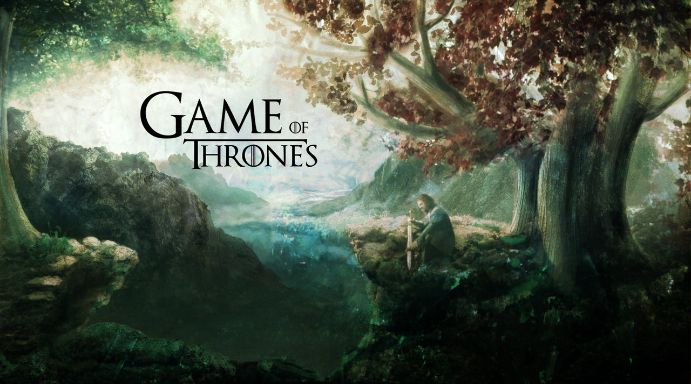
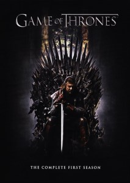
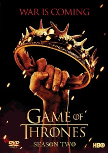
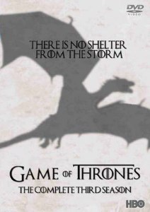
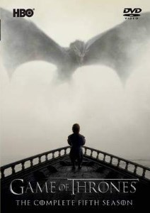

Game of Thrones is an American fantasy drama television series created by David Benioff and D. B. Weiss. It is an adaptation of A Song of Ice and Fire, George R. R. Martin's series of fantasy novels, the first of which is A Game of Thrones. It is filmed in Belfast and elsewhere in the United Kingdom, Canada, Croatia, Iceland, Malta, Morocco, Spain, and the United States. The series premiered on HBO in the United States on April 17, 2011, and its sixth season ended on June 26, 2016. The series was renewed for a seventh season, which premiered on July 16, 2017, and will conclude with its eighth season in 2018 or 2019.
Set on the fictional continents of Westeros and Essos, Game of Thrones has several plot lines and a large ensemble cast but centers on three primary story arcs. The first story arc centers on the Iron Throne of the Seven Kingdoms and follows a web of alliances and conflicts among the dynastic noble families either vying to claim the throne or fighting for independence from the throne. The second story arc focuses on the last descendant of the realm's deposed ruling dynasty, exiled and in hiding while plotting a return to the throne. The third story arc centers on the longstanding brotherhood charged with defending the realm against the ancient threats of the fierce peoples and legendary creatures that lie far north, and an impending winter that threatens the realm.
Game of Thrones has attracted record viewership on HBO and has a broad, active, international fan base. It has been acclaimed by critics, particularly for its acting, complex characters, story, scope, and production values, although its frequent use of nudity and violence (including sexual violence) has been criticised. The series has received 38 Primetime Emmy Awards, including Outstanding Drama Series in 2015 and 2016, more than any other primetime scripted television series. Its other awards and nominations include three Hugo Awards for Best Dramatic Presentation, a 2011 Peabody Award, and four nominations for the Golden Globe Award for Best Television Series – Drama. Of the ensemble cast, Peter Dinklage has won two Primetime Emmy Awards for Outstanding Supporting Actor in a Drama Series and the Golden Globe Award for Best Supporting Actor – Series, Miniseries or Television Film (2012) for his performance as Tyrion Lannister. Lena Headey, Emilia Clarke, Kit Harington, Maisie Williams, Diana Rigg, and Max von Sydow have also received Primetime Emmy Award nominations for their performances in the series.



